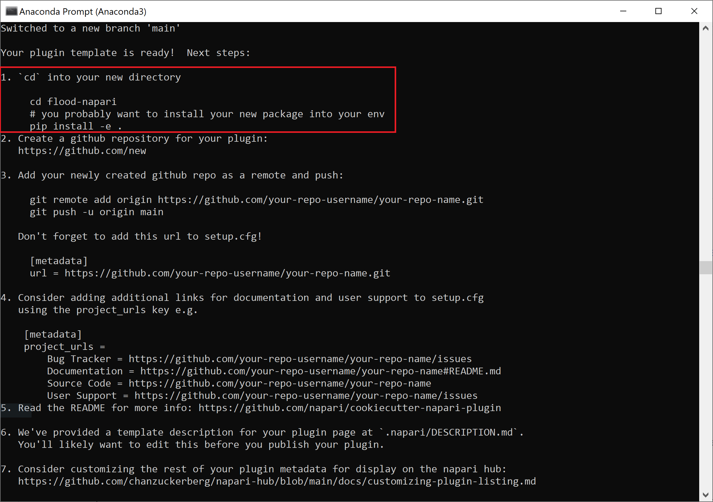
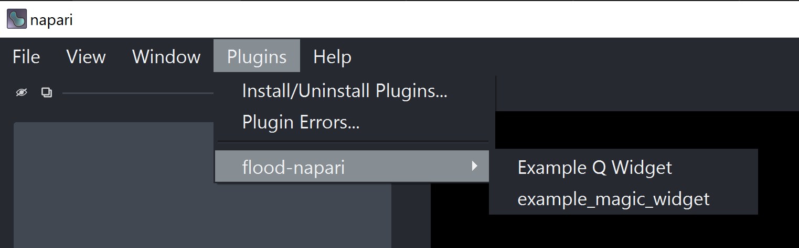
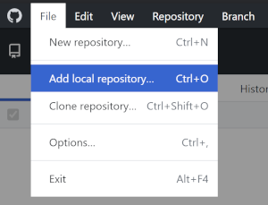
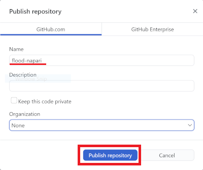
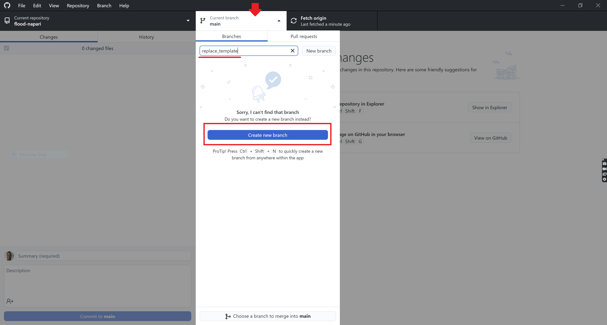
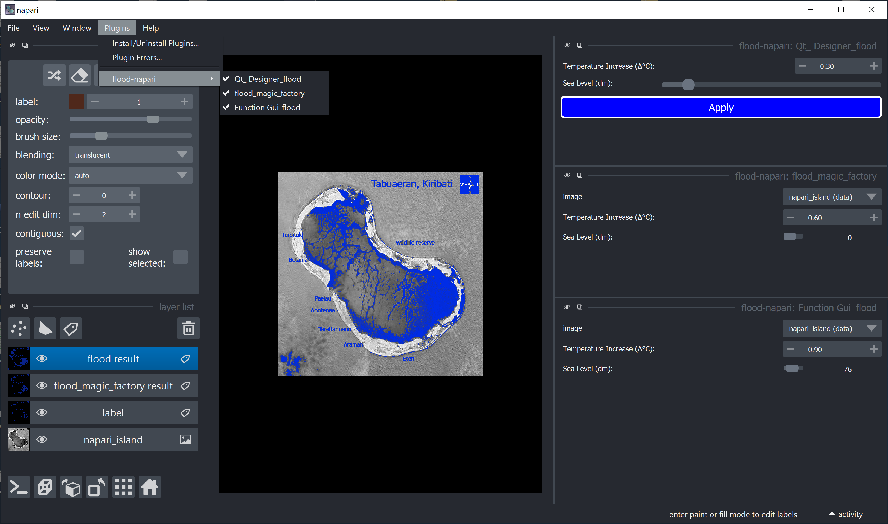
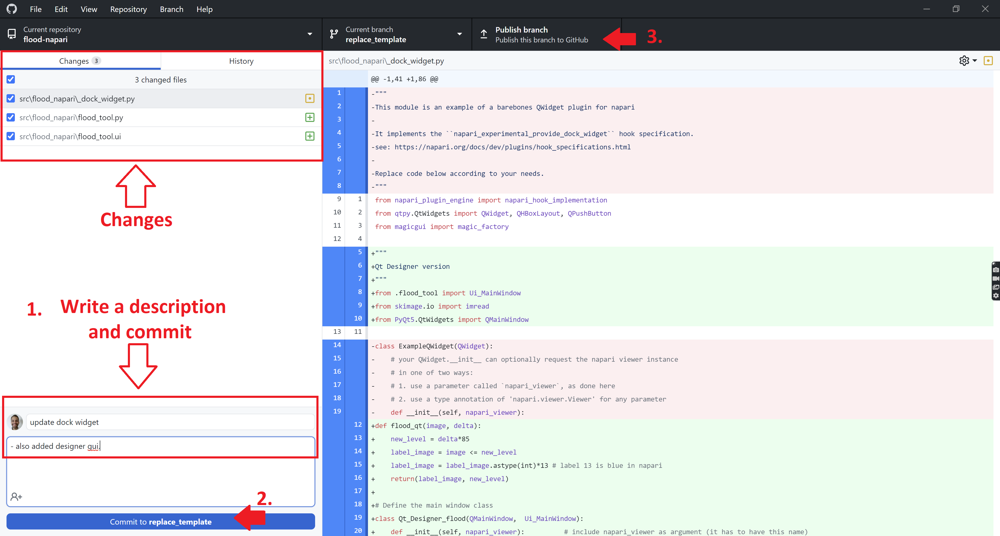
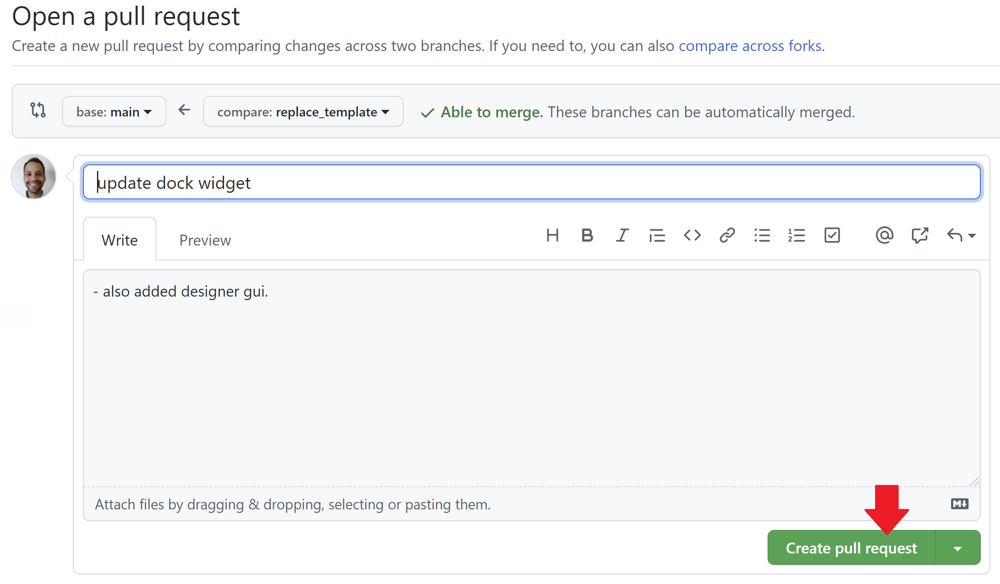
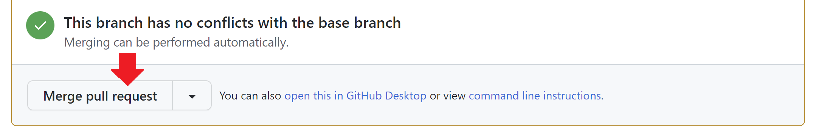
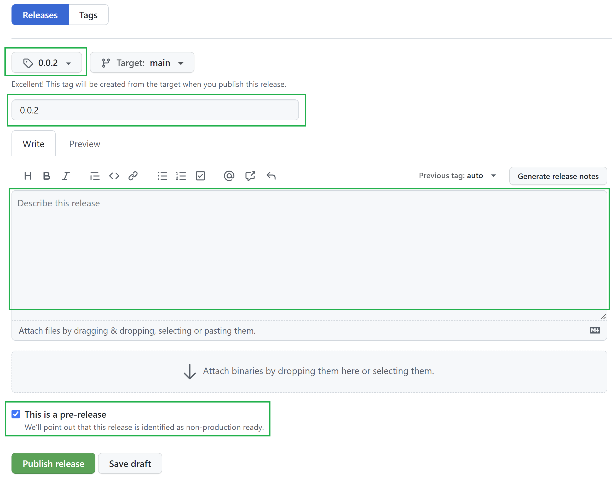

Custom user interfaces for Python (Part 4)
Contents
Custom user interfaces for Python (Part 4)#
Marcelo Zoccoler, Johannes Müller, December 15th 2021, updated on July 20th 2022
Introduction#
Graphical user interfaces (GUIs) are powerful tools to make your scripts and functions available to users that are not necessarily familiar with a lot of coding, development platforms (e.g. Spyder or PyCharm) - and shouldn’t be experienced programmers in order to use your tools.
In this blog, we will cover a few interesting and versatile methods for you to create customized Qt-based GUIs for Python in general. Since our work revolves mostly around the visualization and processing of images, we will also show you a few ways to create great user interfaces for napari.
Blogs on this topic will cover:
Turning napari GUI into plugins#
The previous entry showed you three different ways to create GUIs and embed them into napari locally. This forth and last part will teach you how to transform them into napari plugins! üèùÔ∏è üöÄ
Table of contents#
Creating a plugin from a template using the cookiecutter#
Well, first things first: create a new conda environment. (‚ÄúAnother one?‚Äù üò©) Yes, better safe than sorry üòâ. Don‚Äôt forget to activate it.
The napari website has a complete tutorial for creating plugins, and I would say the easiest way is by using cookiecutter.
So, let’s install and run the cookiecutter as suggested in the template readme:
pip install cookiecutter
cookiecutter https://github.com/napari/cookiecutter-napari-plugin
('pip' is not recognized as ... ?? üôÄ -> conda install pip üò∏)
('git' is not installed. ?? üôÄ -> conda install git üò∏)
The cookiecutter will then start asking you questions about your project. We will answer them one by one, but here is an overview of all of them:
⚠️Spoiler alert⚠️

full_name [Napari Developer]:type your nameemail [yourname@example.com]:type your email, so that people can reach you to talk about your new plugingithub_username_or_organization [githubuser]:type your github username (if you don’t have a Github account, you should create one now)plugin_name [napari-foobar]:type your plugin name ex: ‘flood-napari’Select github_repository_url:
1 - https://github.com/your_github_username/your_plugin_name
2 - provide later
Choose from 1, 2 [1]:type ‘1’, even if you did not create your repository yet, we’ll do that later
Obs: values or words inside square brackets[]are the default option if you just hit ‘Enter’module_name [flood_napari]:type your plugin module name (our plugin has a single module, ex: ‘flood_napari’)short_description [A simple plugin to use with napari]:type a brief description of your plugininclude_reader_plugin [y]:type ‘n’, because our example plugin is not a plugin for reading certain image file typesinclude_writer_plugin [y]:type ‘n’, because our example plugin does not write anythinginclude_dock_widget_plugin [y]:type ‘y’ or just hit ‘Enter’, because we want to dock our plugin to napari frameworkinclude_function_plugin [y]:type ‘n’ for this example, however it could be useful to organize functions into separate filesuse_git_tags_for_versioning [n]:hit ‘Enter’Select docs_tool:
1 - mkdocs
2 - sphinx
3 - none
Choose from 1, 2, 3 [1]:type ‘2’ for this example, check this post to learn more about sphinxSelect license:
1 - BSD-3
2 - MIT
3 - Mozilla Public License 2.0
4 - Apache Software License 2.0
5 - GNU LGPL v3.0
6 - GNU GPL v3.0
Choose from 1, 2, 3, 4, 5, 6 [1]:we like to use ‘1’, you can also change this later if you want, check options here
Done! You will see the screen below with further instructions.

We will just do instruction number 1 to install this default napari plugin locally:
cd flood-napari # replace 'flood-napari' by your plugin name to go to the right directory
pip install -e . # install your plugin locally
Install napari in your environment (pip install napari[all]) and run napari with napari.
When you go to the ‘Plugins’ menu now, you will see your plugin name there. Don’t worry now with the sub-menus, we will edit them afterwards.

Adding your local repository to Github#
We will use Github Desktop to publish our local repository into the Github page. It has a great user interface and integration. So first download and install Github Desktop. It should be a straight-forward installation procedure. If this is your first time using it, you will need to authenticate your account as explained here.
Now open it and let’s add your local repository by clicking on ‘File -> Add local repository…’.

After that, you have to specify your local plugin address. It should be a directory located where you were when you typed cookiecutter commands (typically ‘C:/Users/Your_user_name’ for Windows). It has the plugin name and the following contents:

Find it and click on ‘Add repository’. You will see that it now appears as the current repository and you will add it to Github.com by clicking on ‘Publish repository’.

Then a small window should pop-up. Specify the name of your repository (same name of your plugin, cookiecutter question 4) and click on ‘Publish Repository’.

Now, if you log in into your Github account through the browser and look at your repositories, you should see your new repository there, like this:

Notice how the contents are the same as the ones in your local folder. Your template is online!
Putting your GUI into the template#
Now we will modify the code to add our widgets. In Github Desktop, let’s create a separate branch for your modifications. Click on the current branch, type a new branch name and click on ‘Create new branch’:

Good, now all modifications will go into your new branch!
First, in order for our ‘qt designer version’ to work (see previous post), we have to copy its interface (flood_tool.py, found here) to your local repository address (look for where you created your local version, something like C:/Users/Your_user_name/flood-napari/src/flood_napari).
Then, let’s replace the default Example Q Widget and example_magic_widget by your GUI. With your favorite editor, open the file _dock_widget.py located in your local repository address. It should contain this code:
"""
This module is an example of a barebones QWidget plugin for napari
It implements the ``napari_experimental_provide_dock_widget`` hook specification.
see: https://napari.org/docs/dev/plugins/hook_specifications.html
Replace code below according to your needs.
"""
from napari_plugin_engine import napari_hook_implementation
from qtpy.QtWidgets import QWidget, QHBoxLayout, QPushButton
from magicgui import magic_factory
class ExampleQWidget(QWidget):
# your QWidget.__init__ can optionally request the napari viewer instance
# in one of two ways:
# 1. use a parameter called `napari_viewer`, as done here
# 2. use a type annotation of 'napari.viewer.Viewer' for any parameter
def __init__(self, napari_viewer):
super().__init__()
self.viewer = napari_viewer
btn = QPushButton("Click me!")
btn.clicked.connect(self._on_click)
self.setLayout(QHBoxLayout())
self.layout().addWidget(btn)
def _on_click(self):
print("napari has", len(self.viewer.layers), "layers")
@magic_factory
def example_magic_widget(img_layer: "napari.layers.Image"):
print(f"you have selected {img_layer}")
@napari_hook_implementation
def napari_experimental_provide_dock_widget():
# you can return either a single widget, or a sequence of widgets
return [ExampleQWidget, example_magic_widget]
We will delete the ExampleQWidget and the example_magic_widget (I will also delete initial comments for clarity). We are left with this:
from napari_plugin_engine import napari_hook_implementation
from qtpy.QtWidgets import QWidget, QHBoxLayout, QPushButton
from magicgui import magic_factory
@napari_hook_implementation
def napari_experimental_provide_dock_widget():
# you can return either a single widget, or a sequence of widgets
return [ExampleQWidget, example_magic_widget]
The function decorated with @napari_hook_implementation appends its outputs to your plugin menu in napari. So, let’s add all 3 GUI versions of our flood widget before it. Although they all refer to the same function, for clarity, we will rename our flood function to 3 different versions: flood_qt, flood_magic_factory and flood_fgui. Also, we will rename the Qt class from MainWindow to Qt_Designer_flood and the FunctionGui class from MyGui to FunctionGui_flood.
Once we add them to the code (along with importing necessary libraries), it becomes like this:
from napari_plugin_engine import napari_hook_implementation
from qtpy.QtWidgets import QWidget, QHBoxLayout, QPushButton
from magicgui import magic_factory
"""
Qt Designer version
"""
from skimage.io import imread
from qtpy.QtWidgets import QMainWindow
from qtpy import uic
from pathlib import Path
def flood_qt(image, delta):
new_level = delta*85
label_image = image <= new_level
label_image = label_image.astype(int)*13 # label 13 is blue in napari
return(label_image, new_level)
# Define the main window class
class Qt_Designer_flood(QMainWindow, Ui_MainWindow):
def __init__(self, napari_viewer): # include napari_viewer as argument (it has to have this name)
super().__init__()
self.viewer = napari_viewer
self.UI_FILE = str(Path(__file__).parent / "flood_tool.ui") # path to .ui file
uic.loadUi(self.UI_FILE, self) # load QtDesigner .ui file
self.label_layer = None # stored label layer variable
self.pushButton.clicked.connect(self._apply_delta)
def _apply_delta(self):
image = self.viewer.layers['napari_island'].data # We use the layer name to find the correct image layer
delta = self.doubleSpinBox.value()
label, level = flood_qt(image, delta)
if self.label_layer is None:
self.label_layer = self.viewer.add_labels(label)
else:
self.label_layer.data = label
self.horizontalSlider.setValue(level)
"""
magicgui version
"""
from magicgui import magicgui
from napari.types import ImageData, LabelsData
@magic_factory(delta={'label': 'Temperature Increase (Δ°C):',
'min': 0, 'max' : 3, 'step': 0.1},
new_level={'label':'Sea Level (dm):', 'widget_type':'Slider',
'min': 0, 'max' : 255, "enabled": False},
auto_call=True)
def flood_magic_factory(image: ImageData, delta: float=0, new_level: int=0) -> LabelsData:
new_level = delta*85
label_image = image <= new_level
label_image = label_image.astype(int)*13 # label 13 is blue in napari
return(label_image)
"""
FunctionGui version
"""
from magicgui.widgets import FunctionGui
from napari.types import LayerDataTuple
def flood_fgui(image: ImageData, delta: float=0, new_level: int=0) -> LayerDataTuple:
new_level = delta*85
label_image = image <= new_level
label_image = label_image.astype(int)*13 # label 13 is blue in napari
return((label_image, {'name': 'flood result','metadata': {'new_level':new_level}}))
class FunctionGui_flood(FunctionGui):
def __init__(self):
super().__init__(
flood_fgui,
call_button=False,
auto_call=True,
layout='vertical',
param_options={'delta':
{'label': 'Temperature Increase (Δ°C):',
'min': 0, 'max' : 3, 'step': 0.1},
'new_level':
{'label':'Sea Level (dm):', 'widget_type':'Slider',
'min': 0, 'max' : 255, 'enabled' : False}}
)
def __call__(self):
label_image = super().__call__()
new_level = round(label_image[1]['metadata']['new_level'])
self.new_level.value = new_level
@napari_hook_implementation
def napari_experimental_provide_dock_widget():
# you can return either a single widget, or a sequence of widgets
return [ExampleQWidget, example_magic_widget]
Last thing is to replace napari_experimental_provide_dock_widget outputs by your own. In our case, it should look like this:
@napari_hook_implementation
def napari_experimental_provide_dock_widget():
# you can return either a single widget, or a sequence of widgets
return [Qt_Designer_flood, flood_magic_factory, FunctionGui_flood]
If you now start napari from the terminal again, your plugin, along with each of the 3 sub-menu versions, should be available and working!

Reminder: we wrote our qt_designer version to work with a specific layer name (napari_island). There are other ways of selecting the appropriated layer, like by order, type, etc, which will not be considered in this tutorial. You can have access to available layers through the viewer instance viewer.layers.
Updating Github repository#
You have your updates locally in your separate branch. Let’s push them into your Github repository. If you open Github Desktop again now, you should see all the changes we made listed in the left of the screen. Write a description to these changes (step 1.), click on ‘commit to ‘branch name’’ (step 2.), and then publish your new branch (step 3.):

After that, click on the ‘Create Pull Request’ button, and you will be prompted to a browser tab with your github online repository. There, click on ‘Create Pull Request’.

After the page updates itself, click on ‘Merge Pull Request’ and confirm it if required.

At the end, you should see the image below, which means your online repository is now updated with your new code!

Publishing your plugin#
After you developed your plugin to a point where you think it’s ready to share it with the world, it’s time so submit it to the python package index (PyPI). Publishing the plugin on PyPi may sound like a big ordeal, but is, in fact, very simple. To do so, first create an account on PyPi.
Versioning#
Let’s report the package’s version. We will update two files for that:
Go to your project repository and open the
setup.cfgfile. On this file, at around the third line, you should find something likeversion == 0.0.1. If you are releasing a newer version, replace0.0.1by your new version number. To know more about versioning standards, check this post.Open the
__inti__.pylocated in the same folder where your plugin code resides - which in this example is flood-napari/src/flood_napari - update the version inside this file as well and save it. If you prefer, there are ways to automate version bumping.
Now, remember to update your Github repository again (commit changes, push/publish branch, create Pull request, merge).
The last step of versioning is to provide a version tag. On the Github repository’s main page, at the right side, on Releases, click on “Create a new release” and the following page should load.

Fill the fields highlighted by green boxes and click on “Publish Release”.
Create source files#
After this is done, open an anaconda command prompt and cd into your project repository.
Next, you need to create the necessary packaging information from your sourcefiles. You can do so by either creating a source distribution of your package with
python setup.py sdist
or a wheel using
python setup.py bdist_wheel
The difference between both is, in short, that the source distribution provides, as the name suggests, the source files that can be downloaded and have to be compiled upon installation of the package. Python wheels, on the contrary, come pre-built, which leads to faster installation. This can be convenient for large packages. For a more in-depth on the advantages of either strategy, see this blog. For simple projects, there is no damage in simply providing both, like python setup.py sdist bdist_wheel
A new folder should appear in your repository, called dist, with a couple files inside. Before uploading to PyPi, check if this folder contains only files related to the latest version. If files named after previous versions are present, you can manually delete them.
Upload to PyPi#
Lastly, upload your package to PyPi with twine (use pip install twine if not present already):
python -m twine upload dist/*
This will prompt you to enter your login credentials for PyPi in the command line and then upload your package to PyPi - congrats! For more information on building your package for publication on PyPi, see the official documentation.. Your plugin should soon be available at the Napari plugin hub. It should also pop up as a notification in the napari zulib stream, which is open to everyone.
Note: If you do not feel confident with making your plugin public to the whole world just yet, you can upload your package to a test version of PyPi with the same login credentials using
twine upload --repository testpypi dist/*